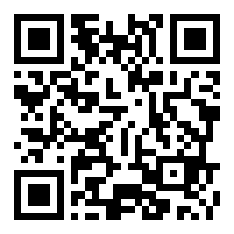

RETRO CAFE
منوی دیجیتال ما را ببینید

10to1000k.github.io/retro-cafe
۱)
دوربین گوشیات را باز کن
۲)
روی کد بگیر
۳)
منو فوری بالا میآید ✨
نسیم شهر، خیابان اصلی، جنب درمانگاه قائم — اینستاگرام:
@Caferetro_ir
🖨 چاپ پوستر